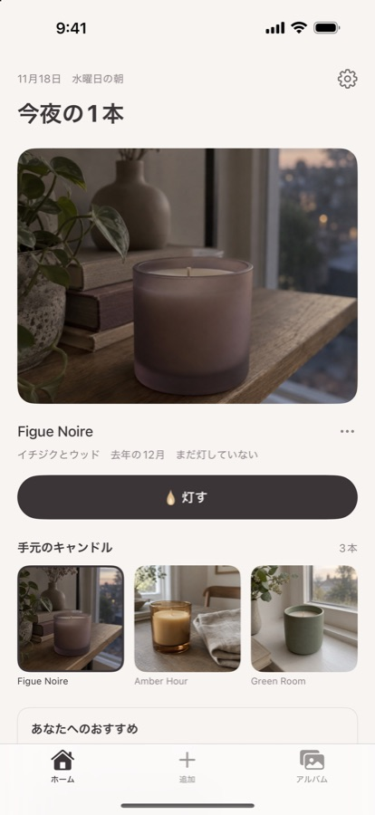

手元のキャンドルを1つの棚にまとめ、今夜の1本を選んで灯し、最後まで灯した1本をアルバムに残します。

できること
- 持っているキャンドルを、写真・名前・香りと一緒に並べます。押した1本が、今夜の1本になります。
- お店のページのURLを貼ると、写真・名前・香り・容量が入ります。
- 初めての夜は、表面まで溶かすための「この時刻まで灯す」の目安が出ます。
- 使い切った1本は、灯した夜と一緒にアルバムへ移ります。
無料とPro
無料
- 手元のキャンドル3本まで
- 灯す・初めての夜の目安
- アルバム・香りの傾向
Nightwick Pro
- キャンドルを何本でも
- 灯している間のロック画面
- ホーム画面のウィジェット
- 機種を変えても残るiCloud
- 次に試す香りの系統
- 買い切り。サブスク・広告はありません。
よくある質問
記録はどこに保存されますかiPhoneの中です。Proでは、ご自身のiCloudにも保存します。アカウントはありません。プライバシーポリシーをご覧ください。
別のiPhoneでProを買いました設定（歯車）を開いて「購入を復元」を押してください。
お店のリンクから全部入りませんでしたお店によっては、ページに載っていない項目があります。足りないところは自分で入れてください。
お問い合わせ
minariapps@gmail.com（アプリの設定（歯車）＞お問い合わせ からも送れます）